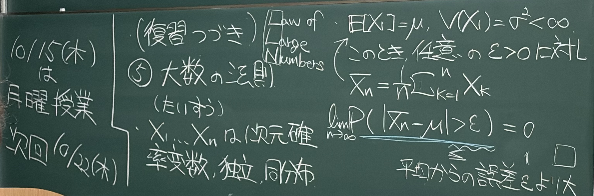
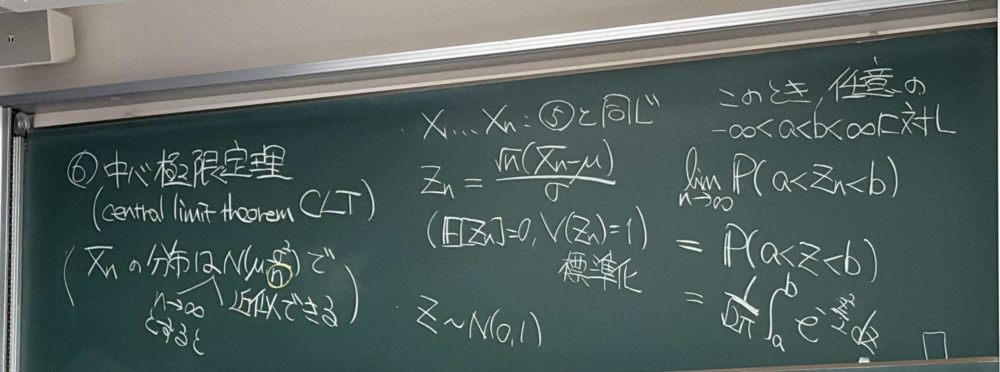
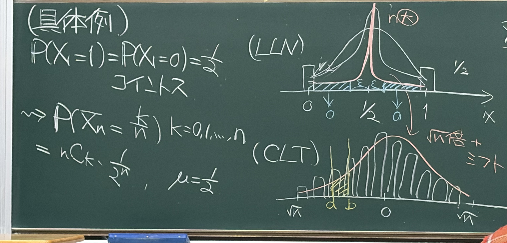
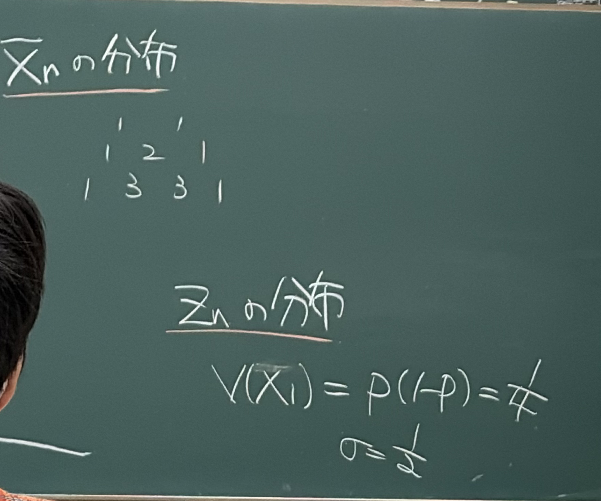

MATHEMATICAL STATISTICS / READING NOTES
大数の法則と
中心極限定理
標本を増やすと、平均はどこに集まるのか。
その周りに残る「ゆらぎ」は、どんな形をしているのか。
⑤ 大数の法則
条件まで理解IMG_3519 · 中央の仮定 → 右の結論

独立で同じ分布に従う実数値の確率変数 を考えます。板書では、平均と分散を 、 と置いています。
これは n 個の観測の平均です。観測のたびに値が変わるので、標本平均 自体も確率変数です。
どんな正の許容誤差 を先に固定しても、標本を増やせば、その誤差を超えて平均から外れる確率は 0 に近づきます。これを確率収束といい、 と書きます。
補足：なぜ平均を取ると、ばらつきが小さくなる？
期待値の線形性と独立性から、
独立性によって異なる標本間の共分散が 0 になります。さらにチェビシェフの不等式を使うと、
これが有限分散という仮定の下での短い証明です。板書にない理解補助として追加しています。
⑥ 中心極限定理
条件・意味を理解IMG_3520 · 左の近似 → 中央の標準化 → 右の極限

独立・同分布という仮定は⑤と同じです。ここでは で割るため、 が必要です。平均の誤差を、その標準偏差 を単位として測ります。
平均を引いて中心を 0 に移し、標準偏差で割って幅をそろえる操作が標準化です。、 は、すべての n で成り立ちます。
標準化した分布が、標準正規分布に近づく
とすると、任意の固定した実数 について、
これを分布収束といい、 と書きます。平均 0・分散 1 というだけでは正規分布とは限りません。「区間に入る確率まで近づく」ことが定理の内容です。
板書の「正規分布で近似できる」の読み方
の第2引数は分散です。これは大きな n に対する近似表現で、厳密な極限の主張は上の の式です。
補足：近似と厳密な等式を区別する
元の が正規分布なら、標本平均も任意の n で厳密に正規分布です。一般の分布では近似であり、十分な標本数は元の分布や求める精度に依存します。 なら各 が確率1で成り立ち、この標準化はできません。
具体例：公平なコイントス
計算を再現IMG_3521 · 左の確率 → 右上 LLN → 右下 CLT

独立なコイントスで、表を 1、裏を 0 とします。板書の設定は 。 は n 回のうち表が出た割合です。
表が k 回となる並び方は 通りで、どの並びも確率 。この2つを掛けたのが板書の式です。ここで です。
右上の図：LLN
標本平均は の近くに集まり、固定した幅 の外に出る確率が小さくなります。横軸は平均そのものです。
右下の図：CLT
中心を引き、幅を拡大すると正規分布の形が現れます。区間 の棒の確率の和が、曲線下の面積に近づきます。
分布と分散をつなぐ
計算・図を確認IMG_3522 · 上の係数 → 下の分散・標準偏差

上段の「1, 1」「1, 2, 1」「1, 3, 3, 1」は二項係数です。各行の和 で割ると、標本平均の各値の確率になります。
| 回数 n | 平均が取る値 | 対応する確率 |
|---|---|---|
| 1 | 0, 1 | 1/2, 1/2 |
| 2 | 0, 1/2, 1 | 1/4, 2/4, 1/4 |
| 3 | 0, 1/3, 2/3, 1 | 1/8, 3/8, 3/8, 1/8 |
下段には 、 とあります。ここでは 、また なので、これは1回分の分散・標準偏差です。
したがって が取る値は 。横軸を移動・拡大しても、各値に対応する確率は変わりません。
n を変えて、2つの見方を比べる
二項分布からの厳密な計算標準正規密度
左：棒の高さが確率。右：棒の面積が確率になるよう、高さを「確率 ÷ 格子幅」に調整。両図の軸範囲は固定しています。
原典に戻る
画像を選ぶと原寸で開きます。




原典の読み順と、この資料の補足について
画像番号順に、各画像の文章・数式のまとまりを左から右へ、まとまりの中は上から下へ読みました。IMG_3521 の右側は上の LLN の図から下の CLT の図へ続きます。
IMG_3519 左端の「10/15（木）は月曜授業、次回10/22（木）」は板書内の連絡事項として確認しました。講義日の見出しは写っていないため、この資料に回数・日付は推定で付けていません。
「補足」、確率の表、操作できる図は、板書の意味をつなぐために追加したものです。この科目フォルダには過去問・演習資料がないため、試験での出題頻度は判定していません。